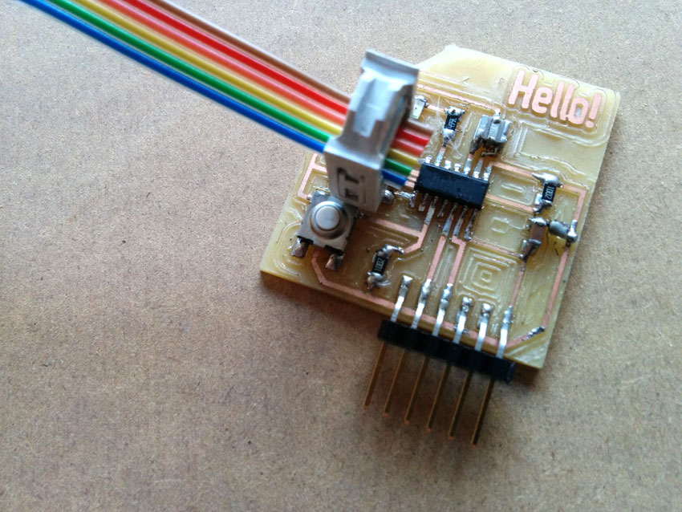
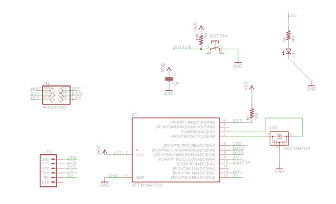
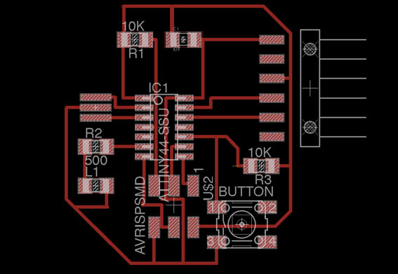
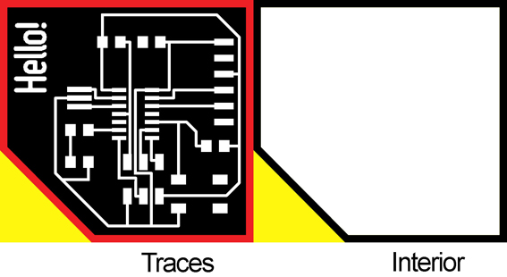
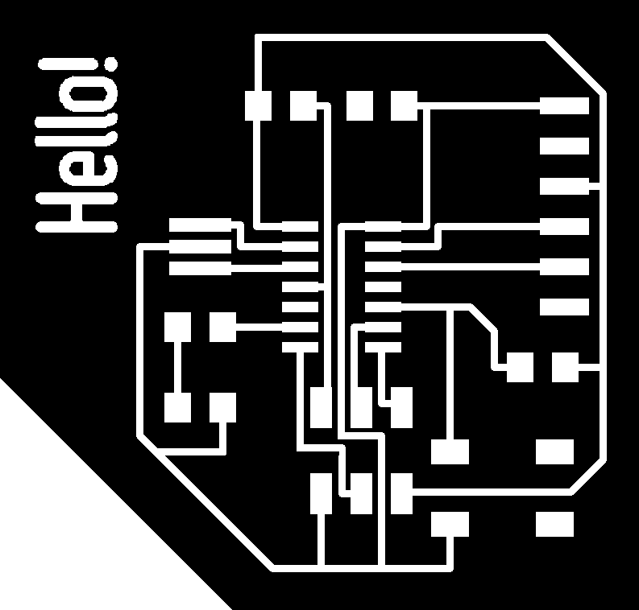
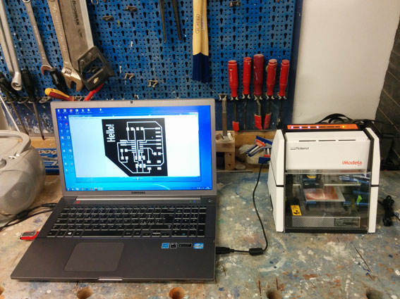
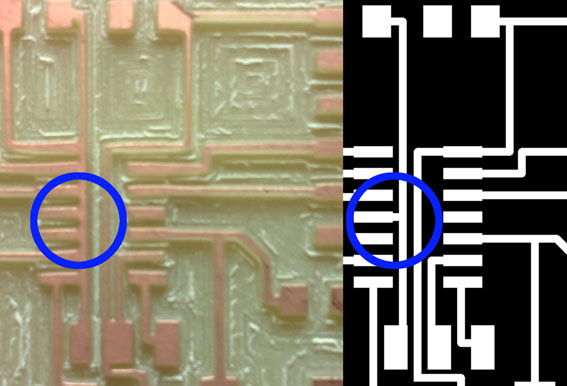

Electronics design
Hello Echo

Digital tools
-schematics and pcb design
EAGLE
pcb design and sharing, bill of materials
Upverter
-pcb boards image file editing
GIMP
-gcode and milling
Fab Modules
iModela Controller
-Mobile apps for schematics and pcb
ElectroDroid
Circuit Playground
Process
Schematic Design
Below my resulting schematics
I followed this thorough tutorial to get warm with electronic design. Instead of downloading the schematic desing file of the Hello Echo board, I opted to produce one brand new file, following the schematics reported on the tutorial. Once downloaded and installed the freeware version of Eagle, I loaded in Eagle the components libraries dwonloaded at the link showed in tutorial Step 5 (download and install the components library). I then started to tinker with eagle schematic layout trying to follow the circuit logic intriduced in the tutorial.
Below, in details the libraries in which I found each component.
01_FAB_Hello library
- 6pin programming header (PINHD-2x3-SMD Description: PIN HEADER)
- microcontroller attiny44A (ATTINY44-SSU Description: SOIC14)
- Resistor (value 10k / RESISTOR1206/Description: 1206)
- Button/6MM_SWITCH6MM_SWITCH Description OMRON SWITCH)
- Ground/GND/Supply symbol
- VCC/Supply Symbol
- LED/LED1206/description 1206
01_SparkFun Library
- FTDI header (ARDUINO_SERIAL_PROGRAMSMD /ARDUINO_SERIAL_PROGRAM)/Description: 1X06-SMD
- 20MHz resonator (RESONATOR SMD)
PCB Design
Below my resulting pcb layout
Pcb layout can be a long process if it's not clear the general logic of the board. Since the components were just few, I did a manual routing, and I had to test several layout version to get a nice one, without bridges. To get the final version, I had to rotate meny components several times before "solve" the routing in a clean way. In Eagle, I set the grid as quite fine grained, in orer to be more free to route those parts going under electronics components (like for the ATTTiny).
Once completed the routing an displayed only the Top Layer, I exported the image file to work on it in GIMP. Indeed, I had to edit the file for many reasons:
- I had to produce the png file for the Interior, mining the pcb part that needs to be cut off.
- Since I wanted to completely fill the milling, I had to reduce as much as possible the copper surface to mill
- I had to evaluate if some of the traces needed to be cleaned up, or better distributed, according to the milling tool diameterers (especially in some points of the board).
Below an image that shows some tips to rework the eagle image file in order to create suitable. traces and interior PNGs.

In this image colors are just to explain how to produce a suitable interior shape for the cut off process based on the traces layout file. The final png must be in black and whit colors only and they can be downloaded just below in PNG format, ready for the milling machine. The yellow area and red one are thos parts that need to be carefully worked in GIMP or in an image raster editor software. The yellow part doesn't need to be milled (is useless an time consuming for the machine) while the red part (wich is the interior file footprint) needs to be a bit calculated in order to be sure that the traces will be not milled away. Thus, it's important to remember the tool diameter we are going to use on the milling machine).

Hello_Echo_TRaces.png

Hello_Echo_Interior.png
Milling process

I used iModela to mill the Hello Echo board using the same settings I used for the FabISP milling process using Fab Modules to generate rml files.
Traces
Speed: 1.4 mm/s
Jog: 1 mm
x=4
y=4
z=0
Cut depth: 0.27 mm
Tool diameter: 0.3 mm
nr offsets: -1
offsets overlap: 70%
Interior
speed: 1.2 mm/s
jog: 1 mm
x=4
y=4
z=0
cut depth: 0.5 mm
stock thickness: 1.8 mm
tool diameter: 1.6 mm
Issues and mistakes
The main mistake I can report is the one I did for the first version of my Hello Echo board. Traces on my eagle pcb file were to close to each other, and I didn't consider that the tool diameter would have been not milled properly since the distance among traces in some points where smaller than the tool diameter. The image below shows one of the main point in which this mistake occurred.
I reworked the png file manually, using GIMP, and paying attention to leave among traces at least 0.3 mm, which is the size of the tool diameter I used to mill traces.
References and books
Make: Wearable ElectronicsMake: Electronics (Learning by Discovery)
Make: More Electronics: Journey Deep Into the World of Logic Chips, Amplifiers, Sensors, and Randomicity
Making Things Talk: Using Sensors, Networks, and Arduino to see, hear, and feel your world